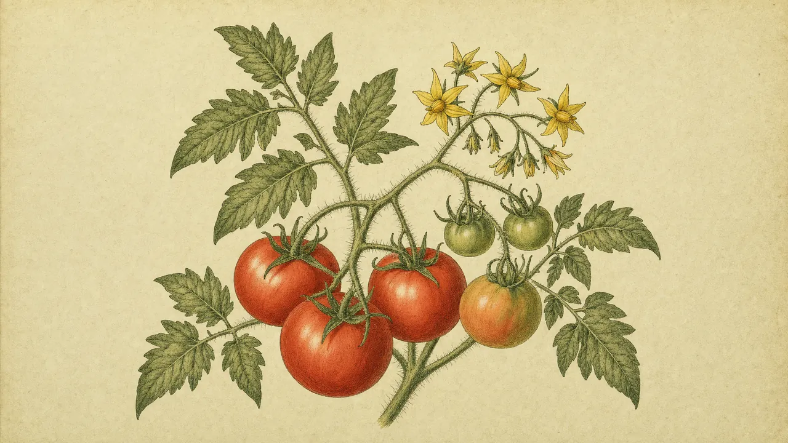
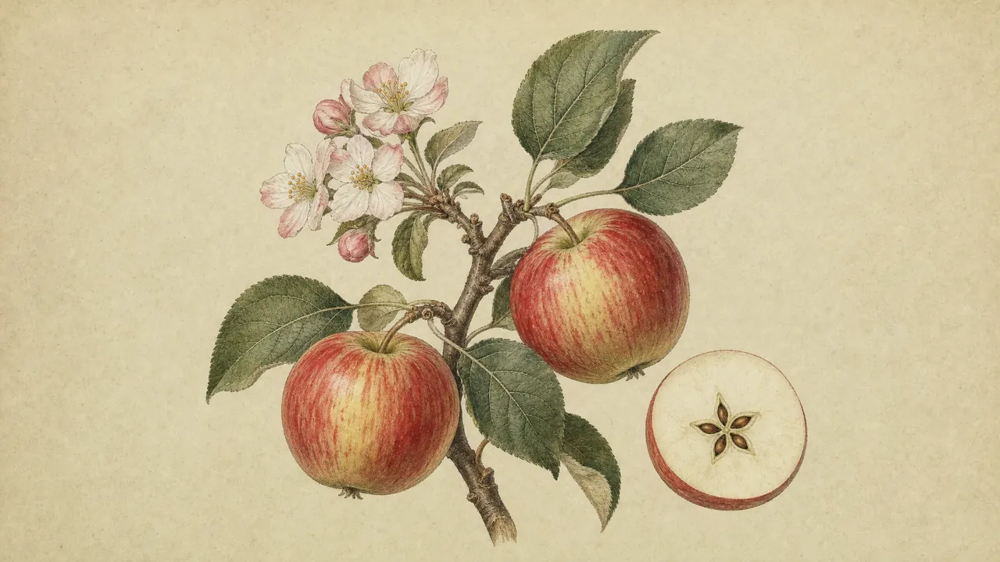
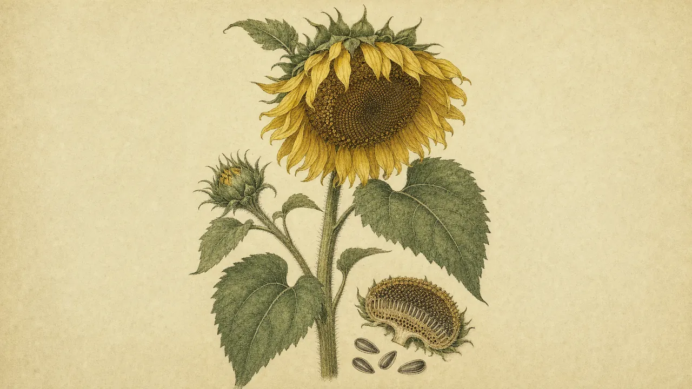
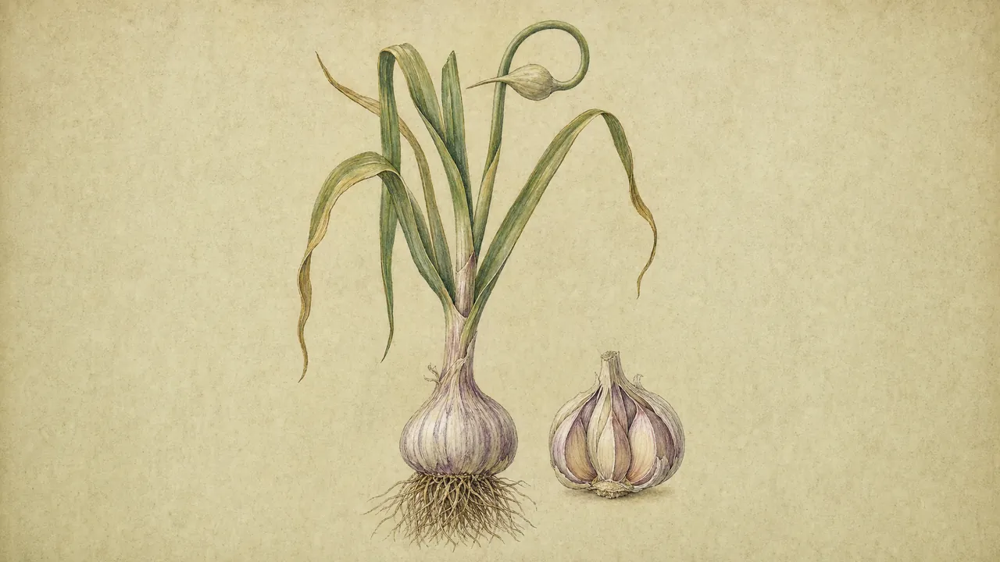

A plant almanac for the homestead.
What to grow, when to plant it, how to raise it, and what to keep away from your pets, your horses and your family. One page for every plant.
Coming to iPhone in 2027
About the app
Homesteader’s Almanac is an iPhone app for people who grow their own food and keep a bit of land. Enter your ZIP code and it works out your hardiness zone and your average first and last frost, so the planting advice fits where you live.
What’s inside
- A page for every plant. Sun, water, spacing, zones, and how to grow it, written in plain language.
- Your frost dates. Zone and frost dates from your ZIP code, so you know when your window opens.
- How-to guides. Starting seeds, taking cuttings, grafting, and other ways to make more plants.
- Pests and diseases. What’s eating or ailing a plant, and what to do about it.
- Safety notes. Whether each plant is safe for dogs, cats, horses and people, and which parts are edible.
A look at the almanac



Get in touch
Questions, corrections or ideas for plants to add? Send a note.